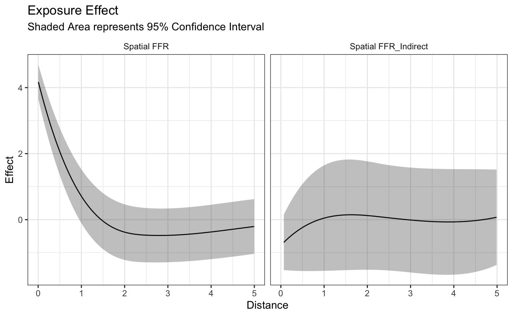
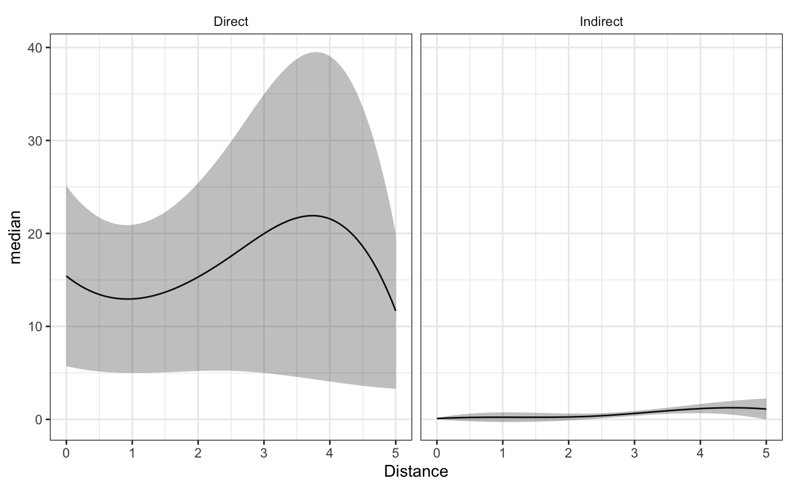

Network.Rmdlibrary(bbnet)
library(tidyverse)
#> ── Attaching packages ────────────────────────────────────────────────────────────────────────────────────────────────────────────── tidyverse 1.2.1 ──
#> ✓ ggplot2 3.3.0 ✓ purrr 0.3.3
#> ✓ tibble 2.1.3 ✓ dplyr 0.8.5
#> ✓ tidyr 1.0.0 ✓ stringr 1.4.0
#> ✓ readr 1.3.1 ✓ forcats 0.4.0
#> ── Conflicts ───────────────────────────────────────────────────────────────────────────────────────────────────────────────── tidyverse_conflicts() ──
#> x dplyr::filter() masks stats::filter()
#> x dplyr::lag() masks stats::lag()
theme_set(theme_bw())
data("bbnet_network")FFR_knots <- bbnet_network$distance_data %>% filter(BEF=="FFR") %>% pull(Distance) %>% quantile(c(.5))
FFRI_knots <- bbnet_network$distance_data %>% filter(BEF=="FFR_Indirect") %>% pull(Distance) %>% median()
fit <- bbnet_lm(BMI ~ sex,
stap_formula = ~sap(FFR) + sap(FFR_Indirect),
subject_id = "subj_ID",
subject_data = bbnet_network$subject_data,
basis_functions = list(FFR=function(x) {splines::bs(x,knots = FFR_knots,Boundary.knots = c(0,5))},
FFR_Indirect=function(x) splines::bs(x,knots=FFRI_knots,Boundary.knots = c(0,5))),
dt_data = bbnet_network$distance_data,
method='lm',
BEF_col_name = "BEF",
distance_col_name = "Distance")
#> Registered S3 methods overwritten by 'rstap':
#> method from
#> predictive_error.ppd rstanarm
#> predictive_interval.ppd rstanarm
summary(fit)
#>
#> Call:
#> lm(formula = formula, data = X)
#>
#> Residuals:
#> Min 1Q Median 3Q Max
#> -7.382 -1.347 -0.083 1.458 7.082
#>
#> Coefficients:
#> Estimate Std. Error t value Pr(>|t|)
#> (Intercept) 11.2780 8.5724 1.316 0.18886
#> sex -0.4370 0.1854 -2.357 0.01877 *
#> SpatialEffect_FFR_0 4.1957 0.2655 15.802 < 2e-16 ***
#> SpatialEffect_FFR_1 -4.3397 0.2138 -20.294 < 2e-16 ***
#> SpatialEffect_FFR_2 -4.8942 0.1187 -41.229 < 2e-16 ***
#> SpatialEffect_FFR_3 -4.5370 0.1621 -27.985 < 2e-16 ***
#> SpatialEffect_FFR_4 -4.4021 0.1565 -28.128 < 2e-16 ***
#> SpatialEffect_FFR_Indirect_0 -0.7795 0.3758 -2.074 0.03854 *
#> SpatialEffect_FFR_Indirect_1 1.0937 0.6108 1.790 0.07395 .
#> SpatialEffect_FFR_Indirect_2 0.8320 0.3195 2.604 0.00947 **
#> SpatialEffect_FFR_Indirect_3 0.6076 0.5012 1.212 0.22596
#> SpatialEffect_FFR_Indirect_4 0.8553 0.3577 2.391 0.01713 *
#> ---
#> Signif. codes: 0 '***' 0.001 '**' 0.01 '*' 0.05 '.' 0.1 ' ' 1
#>
#> Residual standard error: 2.134 on 538 degrees of freedom
#> Multiple R-squared: 0.9151, Adjusted R-squared: 0.9134
#> F-statistic: 527.2 on 11 and 538 DF, p-value: < 2.2e-16
df <- bbnet_df(stap_formula = ~sap(FFR) + sap(FFR_Indirect),
subject_id = "subj_ID",
subject_data = bbnet_network$subject_data,
basis_functions = list(FFR=function(x) {splines::bs(x,knots = FFR_knots,Boundary.knots = c(0,5))},
FFR_Indirect=function(x) splines::bs(x,knots=FFRI_knots,Boundary.knots = c(0,5))),
dt_data = bbnet_network$distance_data,BEF_col_name = "BEF",
distance_col_name = "Distance")p <- prcomp(df,retx = TRUE,scale. = TRUE)
pca_fit <- lm(BMI ~ .,data=cbind(bbnet_network$subject_data[,c("BMI","sex")],p$x))
summary(pca_fit)
#>
#> Call:
#> lm(formula = BMI ~ ., data = cbind(bbnet_network$subject_data[,
#> c("BMI", "sex")], p$x))
#>
#> Residuals:
#> Min 1Q Median 3Q Max
#> -7.382 -1.347 -0.083 1.458 7.082
#>
#> Coefficients:
#> Estimate Std. Error t value Pr(>|t|)
#> (Intercept) 36.05746 0.12198 295.597 < 2e-16 ***
#> sex -0.43702 0.18540 -2.357 0.01877 *
#> PC1 -1.20123 0.03356 -35.791 < 2e-16 ***
#> PC2 -2.59601 0.06820 -38.067 < 2e-16 ***
#> PC3 -6.44516 0.14379 -44.822 < 2e-16 ***
#> PC4 0.15932 0.16412 0.971 0.33211
#> PC5 -5.43652 0.35511 -15.309 < 2e-16 ***
#> PC6 -5.20157 0.40681 -12.786 < 2e-16 ***
#> PC7 -2.08940 0.65585 -3.186 0.00153 **
#> PC8 -30.04453 1.21016 -24.827 < 2e-16 ***
#> PC9 -10.63716 6.10578 -1.742 0.08205 .
#> PC10 -54.90701 27.18978 -2.019 0.04394 *
#> ---
#> Signif. codes: 0 '***' 0.001 '**' 0.01 '*' 0.05 '.' 0.1 ' ' 1
#>
#> Residual standard error: 2.134 on 538 degrees of freedom
#> Multiple R-squared: 0.9151, Adjusted R-squared: 0.9134
#> F-statistic: 527.2 on 11 and 538 DF, p-value: < 2.2e-16translated_coef <- (coef(pca_fit)[3:12] %*% p$rotation)/p$scale
lower_coef <- (confint(pca_fit)[3:12,1] %*% p$rotation)/p$scale
upper_coef <- (confint(pca_fit)[3:12,2] %*% p$rotation)/p$scale
grid <- seq(from=0,to=5,by=0.01)
distgridmat <- cbind(1,predict(splines::bs(0,knots=FFR_knots,Boundary.knots = c(0,5)),grid))
distgridmat2 <- cbind(1,predict(splines::bs(0,knots=FFRI_knots,Boundary.knots = c(0,5)),grid))
output <- tibble(Distance = grid,
median = distgridmat %*% translated_coef[1:5],
lower = distgridmat %*% lower_coef[1:5],
upper = distgridmat %*% upper_coef[1:5],
effect = "Direct") %>%
rbind(.,tibble(Distance = grid,
median = distgridmat2 %*% translated_coef[6:10],
lower = distgridmat2 %*% lower_coef[6:10],
upper = distgridmat2 %*% upper_coef[6:10],
effect = "Indirect"))output %>% ggplot(aes(x=Distance,y=median)) + geom_line() +
geom_ribbon(aes(ymin=lower,ymax=upper),alpha=0.3) +
facet_wrap(~effect) + theme(strip.background = element_blank())